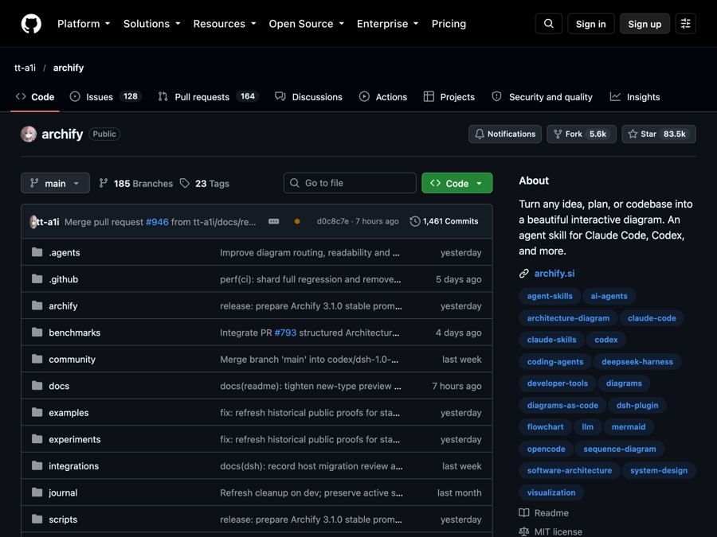
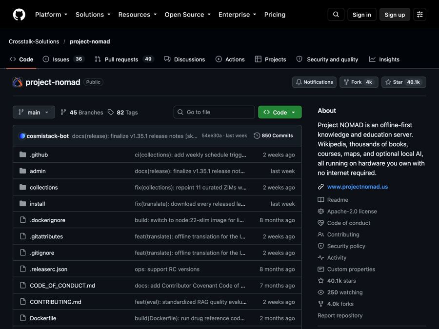

AI for Education
Free tools and news that matter if you work in Education.

AI News October 2026: A Reality Check Before the IPOs
AI news October 2026 so far: ChatGPT gets visual, OpenAI's revenue shakes stocks, AI agents misbehave, Meta's Muse Wonder and Apple's $299 HomeView arrive.

Recordly: Free Screen Recorder With Auto-Zoom (2026)
Recordly is a free screen recorder and editor for Mac, Windows and Linux. It adds auto-zooms, a smooth cursor, webcam bubbles and styled backgrounds.

Archify: Free AI Diagram Generator for Claude and Codex (2026)
Archify is a free AI diagram generator. Describe an idea, plan or codebase to Claude Code or Codex and get an interactive diagram as one shareable web page.

Open Notebook: A Free NotebookLM Alternative You Own
Open Notebook is a free NotebookLM alternative you run yourself. Chat with your PDFs and videos, get cited answers, and turn notes into podcasts.

OpenMontage: Free AI Video Maker for Your AI Helper (2026)
OpenMontage is a free AI video maker. Describe a video in plain words and your AI helper researches, scripts, narrates, edits and renders it for you.

AI News May 2026: Anthropic Passes OpenAI, Musk Loses
AI news May 2026: Anthropic rents Musk's data center and passes OpenAI in value, Musk loses his OpenAI suit, Google remakes search, and AI solves a math puzzle.

Project NOMAD: Free Offline Knowledge Server (2026 Guide)
Project NOMAD is a free offline knowledge server with Wikipedia, medical guides, Khan Academy courses, maps and a local AI that work with no internet.

DeepTutor: Free AI Tutor That Learns From Your Notes
DeepTutor is a free AI tutor that answers questions, makes quizzes and builds study plans from your own notes, books and videos. Here's how to set it up.